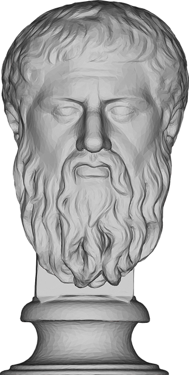

We encourage you to develop a mentoring philosophy as you refine your approach to working with your fellow man
Some random information
Viewed by many as the founding figure of Western philosophy, Socrates (469-399 B.C.) is at once the most exemplary and the strangest of the Greek philosophers. He grew up during the golden age of Pericles' Athens, served with distinction as a soldier, but became best known as a questioner of everything and everyone.

Plato was a philosopher during the 5th century BCE. He was a student of Socrates and later taught Aristotle. He founded the Academy, an academic program which many consider to be the first Western university. Plato wrote many philosophical texts—at least 25.
Epicurus , (born 341, Samos, Greece—died 270 bc, Athens), Greek philosopher. He was author of an ethical philosophy of simple pleasure, friendship, and retirement (see Epicureanism) and a metaphysics based on atomism. His school in Athens, the Garden, competed with the Academy of Plato and the Lyceum of Aristotle
Johann Wolfgang von Goethe, (born August 28, 1749, Frankfurt am Main [Germany]—died March 22, 1832, Weimar, Saxe-Weimar), German poet, playwright, novelist, scientist, statesman, theatre director, critic, and amateur artist, considered the greatest German literary figure of the modern era.
Goethe is the only German literary figure whose range and international standing equal those of Germany’s supreme philosophers.
Within every caterpillar there is a butterfly, and the caterpillar becomes the butterfly through it's own process. Unlike a butterfly, a child will not reach their highest expression without the right tutelage, guidance and support. For this reason, where possible, it is good if they can experience mentorship.
-Jonothan
Call to action! It's time!
Sign up for our programme by clicking that button right over there!